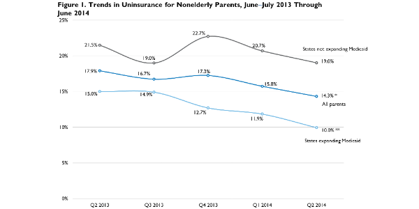

|  |
|
|||||||||||||||||||||||||||||||||||||||||||||||||||||||||||||||||||||||||||||||||||||||||||||||||||||||||||||||||||||||||||||||||||||||||||||||||||||||||||||||||||||||||||||||||||||||||||||||||||||||||||||||
Taking Stock: Health Insurance Coverage for Parents under the ACA in 2014
Genevieve M. Kenney, Nathaniel Anderson, Sharon K. Long, Lisa Dubay, Stacey McMorrow, Lisa Clemans-Cope, Michael Karpman, and Douglas WissokerSeptember 9, 2014
The Urban Institute’s Health Reform Monitoring Survey (HRMS) has been tracking health insurance coverage among nonelderly adults (ages 18–64) since the first quarter of 2013. Like other tracking surveys (Collins, Rasmussen, and Doty 2014; Carman and Eibner 2014),1 the HRMS shows that the uninsured rate has fallen among nonelderly adults since late 2013. This decrease follows the implementation of major components of the Affordable Care Act (ACA), including the expansion of Medicaid to nearly all adults with family incomes at or below 138 percent of the federal poverty level (FPL) in 25 states and the District of Columbia2 and the provision of federal subsidies to purchase coverage in new health insurance Marketplaces. To date, no published report has examined how coverage has been changing for parents living with their dependent children.
Understanding how the ACA is affecting parents is important for many reasons. In 2010, an estimated 11.5 million parents were uninsured (Heberlein et al. 2012). Relative to childless adults, Medicaid eligibility was more generous for parents before the ACA, yet half the states had Medicaid eligibility thresholds for parents that were less than two-thirds of FPL (often much less). Further, an estimated 2 million uninsured parents were eligible for Medicaid but not enrolled (Heberlein et al. 2013).
Reducing uninsurance among parents not only has the potential to benefit parents, but also may have positive spillover effects on children as their parents’ health and financial well-being improves. For example, depression in parents has been shown to pose risks to children’s cognitive, socio-emotional, and behavioral development, especially early in childhood, and it is linked to health and mental health problems for children as they grow (Shonkoff and Phillips 2000). Coverage expansions targeting parents have also been found to increase children’s enrollment in Medicaid and the Children’s Health Insurance Program (Dubay and Kenney 2003).
We use the June 2014 HRMS to examine changes in health insurance coverage for parents since September 2013. For analysis of the characteristics of the parents who remained uninsured in the first half of 2014, we pooled the March and June 2014 samples to increase the sample size. The HRMS was designed to provide early feedback on ACA implementation to complement the more robust assessments that will be possible when the federal surveys release their estimates of changes in health insurance coverage later in 2014 and in 2015 (Long, Kenney, Zuckerman, Goin, et al. 2014). This brief builds on estimates from early July 2014 that showed an estimated gain in coverage of 8.0 million among all nonelderly adults (Long, Kenney, Zuckerman, Wissoker, Shartzer, Karpman, and Anderson 2014).
What We Did
Our analysis compares the uninsured rate for nonelderly parents through quarter 2 of 2014 (survey fielded in June 2014) to rates estimated from data collected during 2013. Parents included in our analytic sample are defined as either parents or guardians living with a dependent child age 17 and under who were willing and able to answer questions about their child’s health and health care.3 We focus on estimated changes in the uninsured rate because estimates of the level of uninsurance often vary across surveys because of differences in the surveys that would be unrelated to the ACA (State Health Access Data Assistance Center 2013). We include information for all three quarters of 2013 for which we have a comparable parent status indicator, but focus on changes between quarter 3 of the 2013 HRMS, fielded in September 2013 (just before the first Marketplace open enrollment period was initiated on October 1, 2013), and quarter 2 of the 2014 HRMS, fielded in June 2014.4
Though each round of the HRMS is weighted to be nationally representative, it is important in examining changes over time that we base our estimates on comparable samples over time. For example, if the share of those with insurance grows simply because more respondents were older or from higher income groups in one round of the survey, it would be incorrect to associate such a change with the ACA Marketplaces and Medicaid expansions. This is a particular challenge in comparing estimates from survey samples over time because the composition of the sample that is surveyed can change across rounds in ways that are not fully captured in the weights and that may distort the estimates of change.
To control for the potential influence of changes in the HRMS sample characteristics, we estimate weighted regression models that control for demographic and socioeconomic characteristics, Internet access, and geography.5 Controlling for differences in respondents’ characteristics through time allows us to remove any variation in insurance coverage caused by changes in the types of people responding to the survey (rather than by changes in the health insurance landscape). In presenting the regression-adjusted estimates, we use the predicted rate of uninsurance in each quarter for the same nationally representative sample of parents. For this analysis, we base the nationally representative sample on the most recent 12-month period from the HRMS (i.e., quarters 3 and 4 of 2013 and quarters 1 and 2 of 2014).
We consider changes in insurance coverage for (1) all nonelderly parents; (2) parents with incomes below 400 percent of FPL, targeted by Medicaid expansion and subsidized coverage through the new Marketplaces; and (3) parents in states that had and had not adopted the ACA’s optional Medicaid expansion by June 1, 2014. We focus on statistically significant changes in insurance coverage over time (defined as differences that are significantly different from zero at the 5 percent level or lower) and highlight changes relative to September 2013, just before the open enrollment period for the Marketplaces began. We provide a 95 percent confidence interval (CI) for key estimates. The basic patterns shown for the regression-adjusted measures are similar to those based solely on simple weighted (unadjusted) estimates.
We also assess changes between September 2013 and March/June 2014 (pooling the March and June 2014 HRMS samples together) in the distribution of uninsured parents between the group of states that expanded Medicaid and the group that did not expand Medicaid.6 Finally, we use the pooled March/June 2014 data to assess characteristics of the remaining uninsured: race and ethnicity, language spoken, highest level of education attained, region, urban or rural status (whether the respondent lives in a metropolitan statistical area), self-reported health status, and number of days in the past 30 days reported to be in poor mental health.
What We Found
Nationally, between September 2013 and June 2014, the estimated uninsured rate for parents fell 2.4 percentage points from 16.7 percent to 14.3 percent, a drop of 14.4 percent. In June 2014, the uninsured rate for nonelderly parents was estimated to be 14.3 percent (95% CI [12.5, 16.2]) for the nation (figure 1, table 1).7 The uninsured rate declined for parents by 2.4 percentage points (95% CI [0.2, 4.6]) between September 2013 and June of 2014, a drop of 14.4 percent. This compares with the decline of 22.3 percent found in the uninsured rate for all nonelderly adults over this time frame (Long, Kenney, Zuckerman, Wissoker, Shartzer, Karpman, Anderson, and Hempstead 2014).
Large gains in coverage were found for parents living in states that expanded Medicaid under the ACA; in those states, the uninsured rate dropped by 5.0 percentage points, a decrease of 33.3 percent from September 2013. The uninsured rate for parents in states that adopted the ACA's Medicaid expansion dropped 5.0 percentage points (95% CI [2.8, 7.1]) since September 2013; there was no significant change in the uninsured rate in the nonexpansion states (0.04 percentage point increase; 95% CI [-2.7, 2.8]). This represents a decline in the uninsured rate of 33.3 percent in the expansion states. In June 2014, the uninsured rate for parents in the 25 nonexpansion states was 19.0 percent (95% CI [17.5, 20.5]), well above the 10.0 percent rate (95% CI [8.5, 11.4]) in the expansion states.8
Uninsured parents are increasingly located in states that have not expanded Medicaid (figure 2.) The share of parents living in states that have not expanded Medicaid increased from 50.9 percent (95% CI [21.4, 80.4]) in September 2013 to 61.3 percent (95% CI [27.9, 94.8]) in March/June 2014. Small sample sizes do not allow us to pinpoint the changes between September 2013 and June 2014, our most recent estimate available, but given that our estimates indicate a significant increase in the share of uninsured parents living in nonexpansion states between March and June 2014 (data not shown), it suggests that the shift that has occurred is even larger than shown in figure 2.
Most of the gain in insurance coverage was among parents in the low- and middle-income groups targeted by the ACA's Medicaid and Marketplace provisions. The coverage rate increased by 3.3 percentage points (95% CI [0.3, 6.3]) for parents with incomes below 400 percent of FPL; there was no statistically significant change in coverage for parents with incomes at or above 400 percent of FPL (0.3 percentage points; 95% CI [-1.2, 1.8]) (figure 3). For parents living in the West, coverage increased by 5.8 percentage points (95% CI [2.9, 8.7] between September 2013 and June 2014; no statistically significant changes were found for parents living in other regions over this period.
Nearly half of the parents who were uninsured in March/June 2014 lived in the South; over half were Hispanic; 17 percent said they were in fair or poor health, and 18 percent reported that they had had poor mental health days for one-third or more of the previous month. Nearly half (49.9 percent; 95% CI [14.8, 85.1]) of uninsured parents in March/June 2014 lived in the South, and 84.8 percent (95% CI [77.3, 92.2]) lived in an urban area (figure 4). Over half of the uninsured parents (57.0 percent; 95% CI [33.6, 80.3]) surveyed in March/June 2014 were Hispanic, and 38.4 percent (95% CI [18.6, 58.3]) said their primary language was Spanish. Over one-third (36.5 percent; 95% CI [22.8, 50.3]) of the parents who were uninsured in March/June 2014 had less than a high school degree (figure 5). Over one in six (16.8 percent 95% CI [13.1, 20.6]) reported that they were in fair or poor health, and 17.5 percent (95% CI [14.0, 21.1]) reported that they had poor mental health days for one-third or more of the previous month (figure 6).
What It Means
Significant gains in coverage have occurred among parents since the beginning of the first Marketplace open enrollment period in October 2013, especially in the states that have expanded Medicaid eligibility under the ACA and among the populations targeted by the Medicaid expansion and the new Marketplace subsidies. Altogether, the uninsurance rate declined by 14.4 percent for parents nationally between September 2013 and June 2014 and by 33.3 percent for parents in states that expanded Medicaid. As the ACA moves forward, it will be important to assess (1) whether these coverage gains translate into improvements in access to care, health status, and financial well-being for parents and (2) the extent of positive spillover effects on parents’ children.
Though a full accounting of the effects of the ACA on changes in insurance coverage for parents is not yet possible, these findings provide evidence that the Medicaid expansion and the provision of subsidies in the new health insurance Marketplaces are likely contributing to significant increases in health insurance coverage among nonelderly parents. We find larger coverage gains in the states that expanded Medicaid for adults, but cannot definitively attribute those differences to the Medicaid expansion because expansion states differed from nonexpansion states in other ways that could affect changes in coverage for parents over this period (Blumberg et al. 2014; Hill, Wilkinson, and Courtot. 2014).
Though monitoring surveys like the HRMS provide estimates of the changes for parents and other subgroups under the ACA, a definitive assessment of the magnitude of the changes in coverage occurring for parents nationally and by state and population subgroups (e.g., parents of young children and parents with chronic health care problems) will have to wait for data from the federal surveys, with their stronger designs, larger sample sizes, much higher response rates, and longer time-trends. Moreover, these estimates of change between September 2013 and June 2014 do not reflect the effects of some important ACA provisions for parents (such as early state Medicaid expansions) that were implemented before 2013. Deriving causal estimates of the effects of the ACA on health insurance coverage will also require accounting for any changes in health insurance coverage that would have occurred independent of the ACA.
While increases in coverage for parents as of June 2014 are noteworthy (particularly in the states that expanded Medicaid, where the uninsured rate had dropped 33.3 percent since September 2013), many low-income parents remain uninsured. The benefits of health insurance are well-established and include reduced financial burdens and improved access to care and related outcomes for those who gain coverage (Institute of Medicine 2009, Howell and Kenney 2012, McWilliams 2009, Finkelstein et al. 2012). Of note, given the possible adverse effects on children, are the poor mental health days for one-third or more of the previous month reported by over one in six uninsured parents.
Thus, it will be important to identify and implement policies in the coming months that are successful at expanding enrollment in available coverage options for parents. The findings from the HRMS indicate that many parents who remained uninsured as of March/June 2014 have low levels of educational attainment and may also face language barriers to enrolling in coverage. Such parents will likely require assistance enrolling in coverage and selecting a health insurance plan.
In the nonexpansion states, where the uninsured rate for parents in the June 2014 HRMS sample was 19.0 percent, many low-income uninsured parents lack access to affordable coverage.9 In these states, additional outreach and enrollment efforts targeted at poor and near poor adults could increase coverage among parents who qualify for Medicaid under pre-ACA rules and the subset with incomes between 100 and 138 percent of FPL who could qualify for subsidized coverage through the new Marketplaces.
In Medicaid expansion states, where the uninsured rate for low-income parents with incomes below 138 percent of FPL was 22.3 percent (95% CI [19.6, 24.9]) in June 2014, the opportunity remains for substantial coverage gains under the Medicaid program. Automatic enrollment strategies that use the Supplemental Nutrition Assistance Program or a child’s or other family member’s enrollment in Medicaid could be very successful at increasing Medicaid coverage and further reducing uninsurance among low-income parents in these states (Guyer, Schwartz, and Artiga 2013; Centers for Medicare and Medicaid Services 2014). Many uninsured parents have children who are already enrolled in Medicaid or CHIP, so using these programs to identify these children and their parents is likely to be a particularly cost-effective outreach strategy (Heberlein et al. 2012).
References
Blumberg, Linda J., John Holahan, Genevieve M. Kenney, Matthew Buettgens, Nathanial Anderson, Hannah Recht, and Stephen Zuckerman. 2014. Measuring Marketplace Enrollment Relative to Projections. Washington, DC: Urban Institute.
Carman, Katherine Grace, and Christine Eibner. 2014. Changes in Health Insurance Enrollment since 2013: Evidence from the RAND Health Reform Opinion Study. Santa Monica, CA: RAND.
Centers for Medicare and Medicaid Services. 2014. June 2014 Monthly Applications, Eligibility Determinations, and Enrollment Report. Baltimore: US Department of Health and Human Services.
Collins, Sara R., Petra W. Rasmussen, and Michelle M. Doty. 2014. Gaining Ground: Americans' Health Insurance Coverage and Access to Care After the Affordable Care Act's First Open Enrollment Period. New York: The Commonwealth Fund.
Dubay, Lisa, and Genevieve Kenney. 2003. “Expanding Public Health Insurance to Parents: Effects on Children’s Coverage under Medicaid.” Health Services Research 38 (5): 1283–1301.
Finkelstein, Amy, Sarah Taubman, Bill Wright, Mira Bernstein, Jonathan Gruber, Joseph P. Newhouse, Heidi Allen, Katherine Baicker, and the Oregon Health Study Group. 2012. “The Oregon Health Insurance Experiment: Evidence from the First Year.” Quarterly Journal of Economics 127 (3): 1057–1106.
Guyer, Jocelyn, Tanya Schwartz, and Samantha Artiga. 2013. Fast Track to Coverage: Facilitating Enrollment of Eligible People into the Medicaid Expansion. Oakland, CA: Kaiser Family Foundation.
Heberlein, Martha, Tricia Brooks, Samantha Artiga, and Jessica Stephens. 2013. Getting into Gear for 2014: Shifting New Medicaid Eligibility and Enrollment Policies into Drive. Oakland, CA: Kaiser Family Foundation.
Heberlein, Martha, Michael Huntress, Genevieve M. Kenney, Joan Alker, Victoria Lynch, and Tara Mancini. 2012. Medicaid Coverage for Parents under the Affordable Care Act. Washington, DC: Center for Children and Families.
Hill, Ian, Margaret Wilkinson, and Brigette Courtot. 2014. The Launch of the Affordable Care Act in Selected States: Outreach, Education, and Enrollment Assistance. Washington, DC: Urban Institute.
Howell, Embry M., and Genevieve M. Kenney. 2012. “The Impact of Medicaid/CHIP Expansions on Children.” Medical Care Research and Review 69 (4): 372–96.
Institute of Medicine. 2009. America’s Uninsured Crisis: Consequences for Health and Health Care. Washington, DC: National Academies Press.
Long, Sharon K., Genevieve M. Kenney, Stephen Zuckerman, Dana E. Goin, Douglas Wissoker, Frederic Blavin, Linda J. Blumberg, Lisa Clemans-Cope, John Holahan, and Katherine Hempstead. 2014. “The Health Reform Monitoring Survey: Addressing Data Gaps to Provide Timely Insights into the Affordable Care Act.” Health Affairs 33 (1): 161–67.
Long, Sharon K., Genevieve M. Kenney, Stephen Zuckerman, Douglas Wissoker, Adele Shartzer, Michael Karpman, and Nathaniel Anderson. 2014. QuickTake: Number of Uninsured Adults Continues to Fall under the ACA: Down by 8.0 Million in June 2014. Washington, DC: Urban Institute.
Long, Sharon K., Genevieve M. Kenney, Stephen Zuckerman, Douglas Wissoker, Adele Shartzer, Michael Karpman, Nathaniel Anderson, and Katherine Hempstead. 2014. Taking Stock at Mid-Year: Health Insurance Coverage under the ACA as of June 2014. Washington, DC: Urban Institute.
McWilliams, J. Michael. 2009. “Health Consequences of Uninsurance among Adults in the United States: Recent Evidence and Implications.” Milbank Quarterly 87 (2): 443–94.
Shonkoff, Jack P., and Deborah Phillips, eds. 2000. From Neurons to Neighborhoods: The Science of Early Childhood Development. Washington, DC: National Academies Press.
Sommers, Benjamin D., Thomas Musco, Kenneth Finegold, Munira Z. Gunja, Amy Burke, and Audrey M. McDowell. 2014. “Health Reform and Changes in Health Insurance Coverage in 2014.” New England Journal of Medicine 371: 867–74.
State Health Access Data Assistance Center. 2013. Comparing Federal Government Surveys that Count the Uninsured. Minneapolis, MN: Robert Wood Johnson Foundation.
About the Series
This brief is part of a series drawing on the Health Reform Monitoring Survey (HRMS), a quarterly survey of the nonelderly population that is exploring the value of cutting-edge Internet-based survey methods to monitor the Affordable Care Act (ACA) before data from federal government surveys are available. The Health Reform Monitoring Survey (HRMS) is supported by multiple foundations and the Urban Institute. The Robert Wood Johnson Foundation and the Ford Foundation provide funding for the core survey and the topical modules. This brief draws in part on the Child Supplement, which was conducted in partnership with the Center for Children and Families at Georgetown University and funded by Atlantic Philanthropies, the David and Lucile Packard Foundation, and an anonymous donor. For more information on the HRMS and for other briefs in this series, visit www.urban.org/hrms.
About the Authors
Genevieve M. Kenney is a senior fellow and codirector, Nathaniel Anderson is a research assistant, Sharon K. Long is a senior fellow, and Lisa Dubay is a senior fellow with Urban Institute’s Health Policy Center. Stacey McMorrow is a senior research associate, Lisa Clemans-Cope is a senior research associate, and Michael Karpman is a research associate with Urban Institute’s Health Policy Center. Douglas Wissoker is a senior fellow with Urban Institute.
Notes 1Jenna Levy, “US Uninsured Rate Holds Steady at 13.4%,” Gallup, June 5, 2014; Jenna Levy, “In US, Uninsured Rate Lowest since 2008,” Gallup, April 7, 2014. 2States that expanded Medicaid by June 1, 2014, are AZ, AR, CA, CO, CT, DE, DC, HI, IL, IA, KY, MD, MA, MI, MN, NV, NJ, NM, NY, ND, OH, OR, RI, VT, WA, and WV. Several of those states (CA, CT, DC and MN) expanded Medicaid to adults under the ACA before 2013. In August 2014, New Hampshire began covering adults under the ACA Medicaid expansion and Pennsylvania had its waiver approved. 3The nonelderly parent sample begins in the second quarter of 2013 and varies between 2,209 and 2,596 in each quarter. Our sample excludes parents over the age of 64 living with a dependent child and parents not living in the same household as their child. We do not include sample adults who are a relative of the sample child unless they indicate that they are a legal guardian. 4Although Marketplace coverage for people enrolling between October and December 2013 did not start until January 2014, some who signed up in the fall may have reported having coverage during the December 2013 HRMS survey. Further, some of those seeking coverage through the Marketplace between October and December 2013 were enrolled in Medicaid. 5Specifically, we control for the variables used in the poststratification weighting of the KnowledgePanel (the Internet-based survey panel that underlies the HRMS) and the poststratification weighting of the HRMS, which include sex, age, race and ethnicity, language, education, marital status, household income, family income as a percent of the federal poverty level, homeownership status, Internet access, urban or rural status, and census region. 6The March and June 2014 quarterly samples had 315 and 235 uninsured parents, respectively (550 overall). The September quarterly sample had 310 uninsured parents. 7Because of rounding, the percentage-point differences derived from figure 1 differ slightly from the percentage-point changes reported in table 1. 8Other analyses have found large gains in states that expanded Medicaid for adults in general, including Long, Kenney, Zuckerman, Wissoker, Shartzer, Karpman, and Anderson (2014); Sommers et al. (2014); Jenna Levy, “US Uninsured Rate Holds Steady at 13.4%”; and Jenna Levy, “In US, Uninsured Rate Lowest since 2008.” 9In states that did not choose to expand Medicaid, adults with incomes between 100 and 138 percent of FPL who do not have access to an affordable offer of employer coverage may be eligible for Marketplace-based subsidies. |
||||||||||||||||||||||||||||||||||||||||||||||||||||||||||||||||||||||||||||||||||||||||||||||||||||||||||||||||||||||||||||||||||||||||||||||||||||||||||||||||||||||||||||||||||||||||||||||||||||||||||||||||


 |
 |
 |